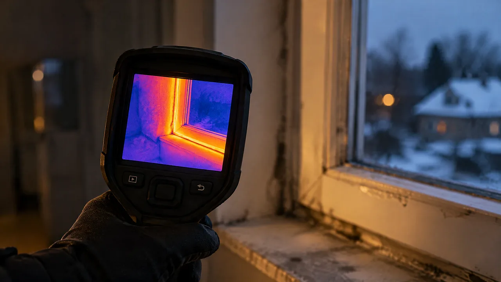

Wärmebild-Check
Wir sehen, was Sie nicht sehen.
Eine Wärmebildkamera misst die Oberflächentemperatur. Kalte Außenluft, warme Räume: Wo die Wärme durchkommt, leuchtet es.

Wärmebild-Check
Eine Wärmebildkamera misst die Oberflächentemperatur. Kalte Außenluft, warme Räume: Wo die Wärme durchkommt, leuchtet es.
Ideal unter 5 °C Außentemperatur, abends oder früh morgens, ohne Sonne auf der Fassade.
Das Haus ist mindestens 12 Stunden normal beheizt, Rollläden oben, Fenster zu.
Fassade, Dach, Fenster, Rollladenkästen, Sockel. Jede Seite des Hauses.
Heizkeller, Leitungen, Heizkörper, Ecken und Anschlüsse.
Bilder mit Erklärung: was wichtig ist, was warten kann, was es für die Heizlast bedeutet.
Richtwerte unsanierter Altbau, Quellen weichen ab (FIZ Karlsruhe über baulinks.de; StMB Bayern „Energetische Sanierung“). Ihr Haus messen wir einzeln.

In dieser Demo ist er Teil der Heizungsberatung. Ein echter Betrieb nennt hier seinen Preis.
Nein. Der Check zeigt, wo Wärme verloren geht, und hilft bei der Heizlast. Für einen Sanierungsfahrplan braucht es eine Energieberatung.
Ohne Temperaturunterschied zwischen innen und außen gibt es nichts zu sehen. Mindestens 10 bis 15 Grad Unterschied sind nötig.